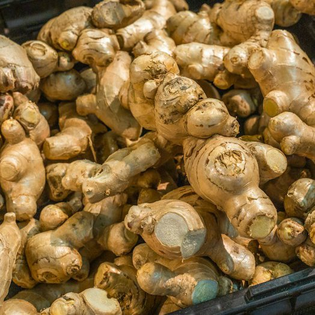

Jengibre
Un rizoma o raíz tuberosa originario del sudeste asiático, famoso por su sabor picante, picante y cítrico. Es un elemento fundamental en la medicina tradicional oriental.
Cómo hacer la infusión: Hierve 3 o 4 rodajas finas de raíz fresca en agua durante 10 minutos a fuego lento para extraer bien sus principios activos.
Beneficios: Potente antiinflamatorio y analgésico natural, reduce las náuseas, estimula el metabolismo y ayuda a combatir síntomas de resfriados.